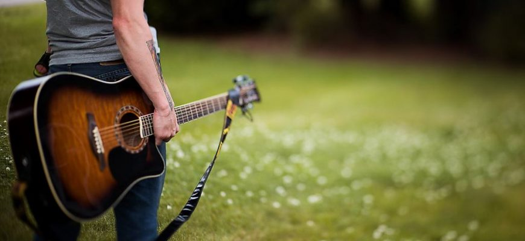

Моё любимое хобби игра на гитаре.Прежде чем начать Многие считают освоение гитары непосильной задачей, на которую уходят долгие годы. Отчасти это так, но только если вы хотите владеть инструментом на профессиональном уровне.Намного чаще люди хотят научиться играть на гитаре, чтобы исполнять любимые песни в компании или просто для души. В этом случае обучение не отнимет много сил и времени: за два-три месяца можно запросто выучить основные аккорды и способы игры.
Что понадобится 1.Гитара. 2.Желание. Оно даже важнее самого инструмента. 3.Время для занятий. Его вы тоже легко найдёте, если желание достаточно сильное. Тем более что вам хватит 30 минут в день. 4.Учебные пособия. С ними вообще никаких проблем: можно купить самоучитель в книжном, посмотреть видеоуроки на YouTube, а аккорды найти в интернете. Как видите, ничего сверхъестественного.
обучающий урок. гитара
о нас гитара уроки игра